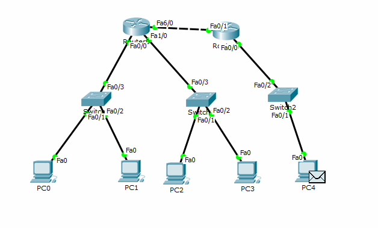

студента группы ИДМ 19-02
Табольского Е.А.
Лабораторная работа №1
Экосистема разработки программ с открытым кодом
Лабораторная работа №2 "Проектная работа"
В мои задачи на данном проекте входило: управление проектом, формирование концепта и разработка дизайна сайта, создание его прототипа и работа с анимацией сайта
Лабораторная работа №3
Настройка локальной сети передачи данных
|
LAN A |
LAN B |
LAN C |
|
|
Количество узлов |
20 |
201 |
200 |
|
Маска |
/27 |
/24 |
/24 |
|
Subnet |
192.168.4.0 |
172.16.4.0 |
10.10.4.0 |
|
IP адрес первого хоста |
192.168.4.1 |
172.16.4.1 |
10.10.4.1 |
|
IP адрес последнего хоста |
192.168.4.224 |
172.16.15.254 |
10.10.4.254 |
|
Broadcast |
192.168.4.255 |
172.16.4.255 |
10.10.4.255 |
1) Разместить на рабочем поле коммутатор и два компьютера, соединить их.
2) Настроить адресацию в созданной подсети.
3) Добавить на рабочее поле еще один коммутатор с двумя компьютерами, соединить и настроить адресацию в новой подсети.
4) Соединить коммутаторы между собой, проверить работоспособность сети.
Сеть неработоспособна, т.к. в сетях А и В используется разная адресация. Для корректной работы сети необходимо использовать маршрутизатор.
5) Добавить маршрутизатор на рабочее поле.
6) Добавить на рабочее поле еще один маршрутизатор, подключить к нему коммутатор и компьютер.
7) Настроить статическую маршрутизацию в спроектированной сети:
|
Устройство |
IP |
Маска |
|
Router0 FastEthernet 0/0 |
192.168.4.1 |
255.255.255.224 |
|
Router0 FastEthernet 0/1 |
172.16.4.1 |
255.255.255.0 |
|
Router0 FastEthernet 0/0/2 |
10.10.4.1 |
255.255.255.252 |
|
Router1 FastEthernet 0/1 |
15.15.0.0 |
255.255.255.0 |
|
Router2 FastEthernet 0/2 |
10.10.4.2 |
255.255.255.252 |
8) Установить баннеры: для установки баннера воспользоваться командой: banner motd [название баннера]
Гифка отправки пакета в сети:

Ссылка на файл с лабораторной